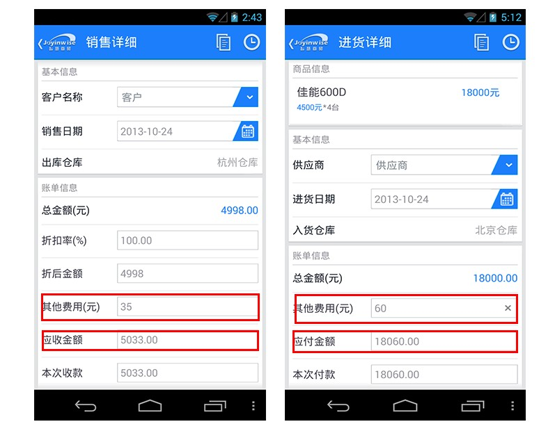

智慧商贸V2.3刚发布不久，智慧商贸Android版V2.3.1也在360手机助手客户端进行版本首发。很多用户都知道V2.3版最大的看点就是多仓库管理功能，而Android版 V2.3.1不仅整合了通讯功能还添加了“员工不能互看销售单”的权限设置，同时也进一步优化了软件。
相对新版V2.3.1只有Android端升级，V2.3版的升级可谓大手笔，既包含了移动端Android版本和iOS版本也对PC端的网页版同时进行“加量”更新。经过一番测试体验，小编发现智慧商贸V2.3和新版Android端V2.3.1还有更多隐藏亮点现在和大家一起分享。
|
软件名称 |
智慧商贸 |
|
软件版本 |
V2.3.1 |
|
软件大小 |
3.3MB |
|
软件授权 |
免费试用 |
|
适用平台 |
移动端：Android、iOS PC端：XP、Win7(32, 64位)、Win8 |
|
下载地址 |
移动端下载：http://app.joyintech.com/ 网页版登录：http://joyinwise.com/ |
整合通讯功能
从新版v2.3.1的版本号就能看出这次的版本升级不会有什么大动作，不过其中整合了通讯功能倒是让人眼前一亮。现在使用Android手机的用户可以在“慧管客”模块中可自定义添加客户/供应商的联系信息，通过智慧商贸进销存软件也可以给客户或供应商打电话、发短信或发名片等。这样不仅有效的管理客户的信息也减少了相关的程序切换的层级操作，方便了用户使用。
智慧商贸Android版V2.3.1整合了通讯功能，可直接联系客户/供应商
多仓库管理
智慧商贸V2.3这次在功能内容上主打“管货”，其中新添的多仓库管理功能便是最好的体现。在“基础信息”模块中新添加了“仓库管理”选项，用户可以点开“仓库管理信息”选项进行仓库信息的新增、编辑、删除、停用和启用等相关操作。支持多仓库管理这一功能，智慧商贸的三个版本同步添加，用户的操作数据都能同步更新。
智慧商贸V2.3新添多仓库管理功能，商品调配更灵活
当然，有了多仓库管理自然少不了库存调拨了，智慧商贸V2.3在“慧管货”设有“新增调拨单”和“历史调拨单”以实现库存调拨和相关调拨单查询的功能，让商品管理更高效灵活。同时，“慧分析”模块中的新添了“库存状况分布”选项，这样用户不仅能清楚知道每个商品的库存状况，甚至每个商品在不同仓库的库存分布状况都一目了然，这也更好的“服务”库存调拨功能。
网页版智慧商贸V2.3支持多仓库管理、库存调拨等功能
智慧商贸V2.3新添“库存状况分析”功能让用户轻松掌握商品与各仓库的分配情况
借入/借出功能
当商品库存不足的时候，许多用户都会存在“调货”这一需求，因此智慧商贸V2.3新添了“借入/借出”功能。在“慧管货”模块新添加了“借入单”和“借出单”，用户可对其进行新增、导出、归还、转销售、查看及作废等功能操作，精细化的功能分类让商品管理更清楚明了，也极大地方便了用户浏览和查询相关商品的流向。

智慧商贸V2.3新添借入/借出功能，商品管理更精细
说到用户在浏览和查询借入/借出商品时，自然还得从“慧分析”模块中新添加的“借入借出报表”，大家可以从商品、客户、供应商三个方面进行查看。但是需要注意的是，借入/借出的相关功能只在Android版和Web版同步更新了，相信iOS版的智慧商贸在后续版本也能见到它。
智慧商贸V2.3在“慧分析”模块中新添借入借出报表
物流、损耗等其他费用纳入统计报表
网购成疯的时代，运费也是一笔不小的费用，这就要求进销存软件的商品销售单需要给物流等费用留有一席之地。智慧商贸V2.3在商品销售单中新添了“其他费用”这一选项，这样在销售的过程中，除了商品的销售金额外所产生的物流、损耗、服务升级等费用就能纳入应收金额的统计中。需要注意的是，“其他费用”在分类方面不免有些过于笼统，不方便用户的后续相关统计和分析。

智慧商贸V2.3在“商品销售单”中支持“其他费用”结算
这一功能也确实满足了不少用户“对外借货”的需求，用心做产品就当如此，提升用户使用体验的根本之道就是功能细节不断完善和优化的过程。这一贴心功能在三大平台也是齐步走的。
销售过程中所产生的物流、损耗、服务升级等费用都纳入应收金额统计
网页版的人性化细节功能设置
从智慧商贸V2.3版本升级的内容来看，通过电脑操作的Web版依然是重头戏，除了与Android版、iOS版同步添加了多仓库管理等功能外，在细节功能上也花费了一番心思。智慧商贸V2.3的Web版新添了业务单据编号可修改功能，如在“商品销售单”的右上角单据编号可根据用户自身需要来修改，也为用户提供了更大的可操作空间。
网页版智慧商贸V2.3支持业务单据编号可修改的操作
当用户的单据过多时，将已经作废的单据进行不显示“冷处理”是个不错的方式。Web版的智慧商贸V2.3新添的业务单据查询中“不显示作废单据”筛选功能，能瞬间将已经作废的业务单据“屏蔽”，屏幕中只出现有效单据让用户的浏览、查询等操作更快速便捷。
网页版智慧商贸V2.3支持业务单据查询中“不显示作废单据”筛选的操作
不少商户都会利用商品条码来管理商品，条码对照表的作用也因此显得更重要。智慧商贸V2.3在“基础资料”模块的“商品列表”选项中新添加了“打印条码对照”功能，一键生成式的操作让商品条码处理起来更简单快速。此外系统还支持时区选择和利润统计表等。
网页版智慧商贸V2.3支持条码对照表打印的操作
网页版智慧商贸V2.3新添时区选择的功能
总结：在进销存软件领域里，智慧商贸进销存算是一款迟来的产品，毕竟管家婆和金蝶等“大兵”早就声名在外，但智慧商贸进销存凭借着超强的跨平台适用、离线支持、云端存储等新鲜特性也为用户带来了更加创新实用的使用体验。
值得一提的就是智慧商贸版本更新的速度，匀速的升级也让软件更有活力。新版智慧商贸V2.3新添的多仓库管理、借入/借出、其他费用纳入应收金额统计及其他细节功能，有效促使功能分类更加精细化，不仅进一步满足了用户的使用需求也带来了更好的用户体验。